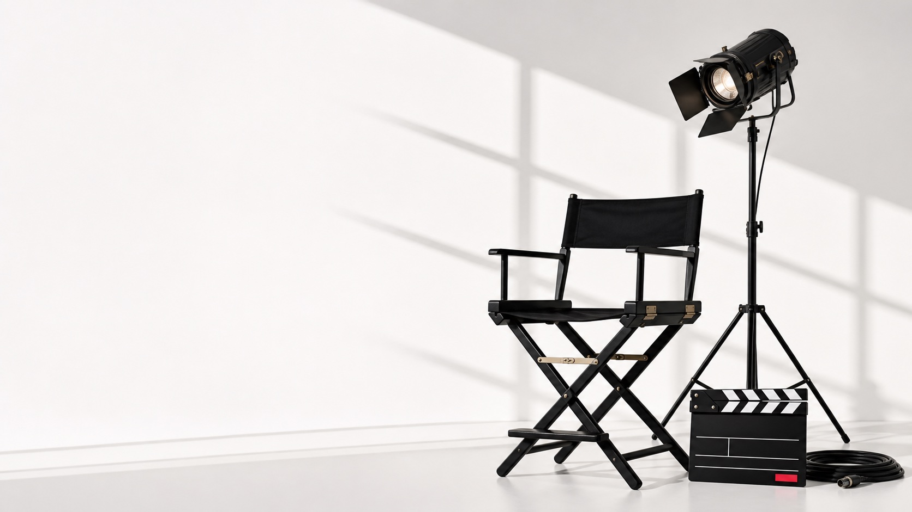
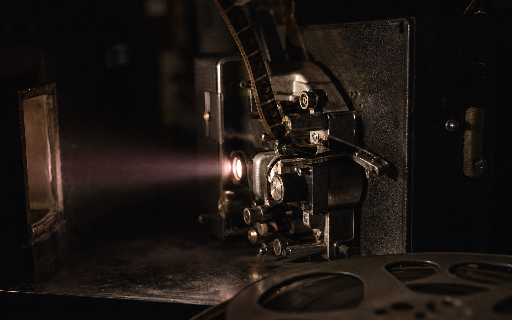

People First
We take care of our crew, clients, and collaborators because great work starts with great people.

Imagine. Create. Inspire.
AKtion! creates scripted, unscripted, and marketing work with the care great stories and great crews deserve.
About AKtion!
Founded by Ah’Sune McPhearson and Kyrah Kimbro, AKtion! began with a simple decision: we refused to wait for an opportunity to present itself, so we created it ourselves.
We are changing how films are made by treating culture on set with the same care as the content on screen. Every voice is heard. Every role matters. Every client becomes part of the process.
We tell powerful stories that move people, with representation in front of the camera and behind it.
Our values shape the work, the relationships, and the environment we build on every production.
We take care of our crew, clients, and collaborators because great work starts with great people.
Every project is treated as our own, with full passion and precision from first conversation to final delivery.
We are building the table where our stories are created, controlled, and celebrated by us.
Production capabilities
Our work
The full AKtion! portfolio is being assembled. Explore the work page for the future project structure and an easy path to add Dropbox media.
